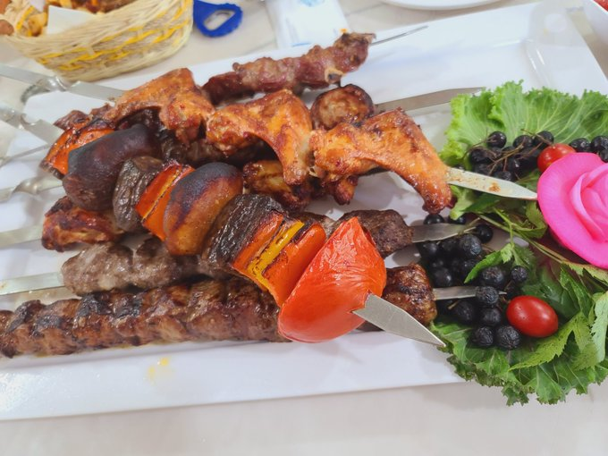

Twitterdaqi ayol-erkak qarama-qarshiliglardan o'zinglar zerikmadinglarmi?
Home

Обедда.....
Кечиринглар

Twitterdaqi ayol-erkak qarama-qarshiliglardan o'zinglar zerikmadinglarmi?
Обедда.....
Кечиринглар
